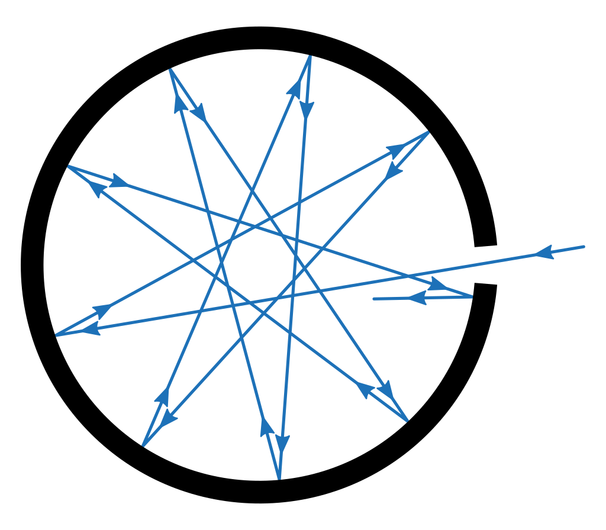

В книге «Принцип сохранения энергии» (1887),
сыгравшей значительную роль в развитии представлений об этом фундаментальном законе природы,
Планк подробно рассмотрел историю возникновения этого закона, проанализировал вклад учёных прошлого
(начиная от Стевина и заканчивая Гельмгольцем) в понимание роли концепции сохранения энергии в науке.
Далее Планк рассмотрел различные виды энергии и показал, что для получения из закона сохранения энергии
уравнений движения (например, уравнений Ньютона) необходимо использовать так называемый принцип суперпозиции,
согласно которому полную энергию системы можно разбить на сумму независимых компонентов (например, на энергии
движения вдоль соответствующих координатных осей). Принцип суперпозиции, согласно Планку, не является вполне
строгим и нуждается в экспериментальной проверке в каждой отдельной ситуации. Опираясь на этот принцип, учёный
также показал, что из закона сохранения энергии следует ньютоновский закон действия и противодействия. Таким
образом, подчёркивает Планк, «принцип суперпозиции играет во всей физике… чрезвычайно важную роль; без него
все явления смешались бы друг с другом, и совершенно невозможно было бы установить зависимость отдельных явлений
друг от друга; ибо если каждое действие нарушается другим, то, естественно, прекращается возможность познать
причинную связь».
В своём рассмотрении
закона сохранения энергии
как эмпирического закона учёный
стремился отделить его физическое содержание от распространённых в то время философских и научно-популярных
спекуляций,
а заодно провести границу между теоретической физикой с одной стороны и метафизикой и математикой с другой. В
этом также
находило выражение стремление, которому Планк следовал на протяжении всей своей жизни: выявлять универсальные
научные принципы,
лишённые антропоморфных черт или исторического релятивизма.
С исследованием закона сохранения энергии связано обращение Планка к другой фундаментальной
концепции —
принципу наименьшего действия, который он называл «высшим физическим законом». Учёный отмечал, что законы
сохранения
единым образом следуют из принципа наименьшего действия: закон сохранения импульса соответствует
пространственным координатам,
тогда как закон сохранения энергии — временно́му измерению. Более того, когда первые открытия в области
квантовой физики поставили
вопрос о применимости известных законов классической механики и электродинамики, принцип наименьшего действия,
по мнению Планка, должен
был сохранить свою универсальную значимость, в отличие от таких производных от него понятий, как уравнения
Гамильтона.
Термодинамика
Принцип возрастания энтропии и его применения
Со студенческих пор Планк испытывал глубокий интерес ко второму началу термодинамики,
однако был не удовлетворён его формулировками. По утверждению учёного, второе начало можно сформулировать
в наиболее простом и общем виде, если воспользоваться представлением об энтропии — величине, введённой в физику
Рудольфом Клаузиусом. Тогда, согласно Планку, второй закон термодинамики можно выразить в следующей форме:
суммарная энтропия всех тел, испытывающих изменения в том или ином естественном процессе, возрастает.
Под «естественным процессом» Планк подразумевал необратимый процесс, в противоположность процессу обратимому,
или «нейтральному»; отличительной особенностью естественного процесса является невозможность вернуть систему
в исходное состояние без внесения изменений в окружающие систему тела. Таким образом, энтропия выступает в
качестве
меры «предпочтения», оказываемого природой конечному состоянию системы перед начальным, и тесно связана с
необратимостью
процессов. Эти соображения были изложены молодым учёным в его докторской диссертации (1879). В последующие годы
он рассмотрел ряд
конкретных термодинамических процессов с целью доказательства возможности установления законов физического и
химического равновесия
из соображения о достижении энтропией максимальной величины в состоянии равновесия[68]. Впрочем, как отметил
много лет спустя сам Планк,
«великий американский теоретик Джозайя Уиллард Гиббс опередил меня, ещё раньше сформулировав те же самые
положения, частично даже в ещё
более общем виде, так что… мои труды не увенчались внешним успехом».
Преимущества формулировки второго начала термодинамики в терминах энтропии были продемонстрированы
учёным в серии из четырёх работ под общим названием «О принципе возрастания энтропии» (Über das Princip der
Vermehrung der Entropie,
первые три части вышли в 1887, а четвёртая — в 1891 году). В первом сообщении Планк рассмотрел взаимодействие
между двумя агрегатными
состояниями одного вещества, а также между химическим соединением и смесью продуктов его диссоциации. Он
показал, что при произвольных
температуре и давлении в таких системах невозможно устойчивое равновесие: в первом случае одно агрегатное
состояние переходит в другое,
а во втором вещество полностью распадается или же, наоборот, все продукты диссоциации соединяются. Далее автор
рассмотрел химические реакции
при постоянном весовом соотношении веществ и пришёл к выводу, что вследствие принципа возрастания энтропии
реакция будет идти до полного своего
окончания в определённом направлении, зависящем от температуры и давления. Во втором сообщении Планк обратился к
проблеме диссоциации газообразных
соединений и, проведя анализ изменения энтропии, показал, что разложение вещества будет продолжаться или нет в
зависимости от состояния системы, определяемого
температурой, давлением и степенью диссоциации. В третьем сообщении учёный продемонстрировал, что принцип
возрастания энтропии позволяет установить законы
наступления любых химических и термодинамических реакций. Здесь же он ввёл понятие электрической энтропии и
проанализировал случай взаимодействия двух проводников
. Наконец, в последнем, четвёртом, сообщении Планк рассмотрел электрохимические процессы. Теоретические выводы
для всех частных случаев, к которым он обращался
в этой серии статей, сравнивались с доступными экспериментальными данными. Термодинамический подход, развитый
Планком в этих работах, сыграл значительную
роль в развитии физической химии; в частности, им было получено важное выражение для зависимости константы
равновесия химической реакции от давления.
На протяжении своей последующей научной карьеры Планк
неоднократно возвращался к обсуждению смысла второго начала термодинамики и различных
его трактовок. Он считал, что этот закон невозможно сформулировать априори, а только
вывести из достоверных экспериментальных наблюдений. Значение второго начала, согласно
Планку, также состоит в том, что оно предоставляет необходимый и достаточный критерий для различения
обратимых и необратимых процессов или, другими словами, меру термодинамической вероятности того или иного
состояния системы.
Его обращение к вероятностной трактовке энтропии, впервые предложенной Людвигом Больцманом, было связано с
разработкой теории
теплового излучения в 1895—1901 годах. Для Планка преимущество статистического определения энтропии над чисто
термодинамическим,
которого он ранее придерживался, состояло в расширении этого понятия на неравновесные состояния системы. Однако,
в отличие от Больцмана,
трактовка Планком принципа возрастания энтропии как абсолютного, детерминистского (а не статистического) закона
оставалась поначалу неизменной.
Лишь к 1914 году работы Альберта Эйнштейна и Мариана Смолуховского по теории броуновского движения окончательно
убедили Планка в существовании
флуктуаций и, как следствие, в справедливости статистического понимания второго начала термодинамики.
В статье «Новое статистическое определение энтропии» (Eine neue statistische Definition der Entropie, 1925)
он дал общую формулировку статистического выражения для энтропии квантовых систем и применил её к случаям
системы осцилляторов и одноатомного газа.
Термодинамика растворов и электролитов
В серии работ «О принципе возрастания энтропии»
Планк применил второе начало термодинамики в своей формулировке к
описанию термодинамических свойств разведённых растворов и определил условия, налагаемые на
концентрации растворённых веществ, чтобы при данных температуре и давлении в системе наступило
химическое равновесие. При этом он показал, что свойства растворов зависят от взаимодействия между
молекулами растворителя и растворённого вещества и потому не сводимы к газовым законам; вывел из
термодинамических соображений закон Рауля о понижении давления пара растворителя при добавлении к
нему некоторой доли другого вещества; установил соотношение между понижением температуры плавления и
скрытой теплотой плавления; получил формулу Вант-Гоффа для осмотического давления.
Пользуясь своей теорией, Планк в 1887 году показал, что такие свойства растворов,
как понижение температуры замерзания, можно объяснить только диссоциацией растворённого
вещества. Это находилось в соответствии с теорией электролитической диссоциации, развитой
примерно в те же годы шведским учёным Сванте Аррениусом и получившей тем самым термодинамическое
обоснование. Впрочем, сам Аррениус критиковал планковский подход, поскольку считал важным наличие
у частиц растворённого вещества электрического заряда, который никак не учитывался в чисто термодинамическом
анализе немецкого физика. Почти одновременное появление работ Планка и Аррениуса вызвало в начале 1890-х
годов дискуссию о приоритете в разработке теории электролитической диссоциации; впрочем, впоследствии Планк
признал первенство своего шведского коллеги.
Впрочем, как заметил Макс Борн, никто из участников
дискуссии не был полностью прав, поскольку, как показали исследования Дебая и Хюккеля,
справедливость термодинамических законов не отменяет зависимость их конкретного вида от заряда.
В 1888 году независимо от Вильгельма Оствальда Планк продемонстрировал применимость
закона действующих масс к растворам слабых электролитов. В 1890 году Планк дал термодинамическое обоснование
теории диффузии электролитов, предложенной Вальтером Нернстом и основанной на представлении об осмотическом
давлении ионов в растворе. Опираясь на эту теорию, Планк получил для разности потенциалов двух электролитов
формулу, которая была экспериментально подтверждена Нернстом. В своих «Лекциях по термодинамике» (1897)
учёный дал строгое доказательство правила фаз для многокомпонентной химической системы, применил его к
растворам,
исследовал ряд частных случаев и классифицировал их в соответствии с числом компонент и числом фаз.
Много лет спустя, в начале 1930-х годов, Планк вернулся к физико-химической тематике и написал
несколько работ о разности потенциалов слабых растворов электролитов.
Прочие работы по термодинамике
В 1906 году Нернст на основе своих экспериментальных исследований предположил,
что энтропия чистого кристаллического вещества при абсолютном нуле температуры стремится к постоянной величине,
не зависящей от фазы, давления и других параметров. Это утверждение получило название третьего начала
термодинамики,
или теоремы Нернста. В 1911 году Планк предложил считать, что при абсолютном нуле энтропия любого однородного
конденсированного
вещества обращается в нуль. Третье начало в такой форме не ограничивается случаями химических реакций или
фазовых превращений,
рассмотренными Нернстом, а позволяет определить абсолютное значение энтропии любого одиночного тела.
Более того, такое определение энтропии, согласно Планку, можно связать с квантовыми закономерностями,
а именно с фиксированной величиной ячейки фазового пространства, что позволяет однозначно вычислить вероятность
термодинамического состояния (число микросостояний) и, следовательно, энтропию.
В 1934 году Планк предложил первую общую математическую формулировку принципа Ле Шателье — Брауна,
согласно которой при изменении одного из параметров системы происходит такое смещение другой характеристики, что
изменение первого параметра или увеличивается, или уменьшается в зависимости от того, относятся ли оба параметра
к
одному типу величин или к разным. Под типом величин здесь имеются в виду интенсивные или экстенсивные величины.
Теория теплового излучения и начало квантовой теории
Классический этап
Ещё в самом начале своей научной деятельности Планк пришёл к выводу,
что законы термодинамики сами по себе способны приводить к правильным результатам без
использования каких-либо произвольных предположений о строении вещества.
К таким предположениям он относил и атомизм.
Более того, он критиковал кинетическую теорию газов,
считая её противоречащей принципу возрастания энтропии,
и в 1882 году писал, что атомная теория, в конечном счёте,
должна уступить место представлению о непрерывном строении материи. Однако вскоре, работая над проблемами
физической химии, он осознал,
что никакой плодотворной альтернативы атомным и молекулярным представлениям не существует и что необходимо иметь
некоторую механическую модель элементарных явлений.
При этом, однако, он продолжал скептически относиться к существующей атомистической гипотезе и статистическим
подходам к термодинамике.
По его мнению, введения вероятности было недостаточно, чтобы объяснить необратимость термодинамических
процессов; возрастание энтропии он понимал в строго
детерминистском смысле. Противоречивость позиции Планка проявилась в развернувшейся в 1895 году дискуссии, в
которой он поддержал своего ученика Эрнста Цермело,
критиковавшего статистическую трактовку энтропии Людвига Больцмана, и одновременно не желал полностью отвергать
возможность механического объяснения второго
начала термодинамики. В качестве компромисса он предположил (1897), что строгая механическая интерпретация может
оказаться справедливой при рассмотрении не
дискретных масс (как в кинетической теории газов), а непрерывной материи. В попытке разрешить противоречия между
механикой и термодинамикой и получить
необратимость за счёт чисто консервативных процессов учёный обратился к проблеме теплового излучения. Забегая
вперёд, можно сказать, что работа над
этой темой превратила его в убеждённого атомиста.

К тому моменту, когда Планк приступил к работе над теорией теплового излучения,
перед этой дисциплиной стояла проблема фундаментальной важности — рассчитать распределение энергии
в спектре равновесного излучения абсолютно чёрного тела, то есть тела, полностью поглощающего падающее
на него излучение во всём спектральном диапазоне. Хорошей практической реализацией абсолютно чёрного тела
является небольшое отверстие в стенке замкнутой полости; внутри такого устройства устанавливается равновесие
между излучением и веществом,
так что излучение, выходящее из отверстия, близко по своим характеристикам к излучению чёрного тела. Важность
функции K
( ν , T ) описывающей испускательную способность абсолютно чёрного тела при данной температуре T T и
на данной частоте ν , определяется законом Кирхгофа (1859), согласно которому отношение испускательной и
поглощательной
способностей любого тела равно как раз универсальной функции K ( ν , T ) . К концу XIX века было установлено
несколько закономерностей, касающихся равновесного излучения абсолютно чёрного тела. Так, закон Стефана —
Больцмана (1879, 1884) утверждает
температурную зависимость объёмной плотности энергии излучения, величины, интегральной по всем частотам в
спектре. Закон смещения Вина (1893
) позволил свести задачу поиска функции двух аргументов K ( ν , T ) к нахождению функции одной переменной
F ( ν / T ). Кроме того, этот закон определяет смещение максимума спектра излучения при изменении температуры.
Попытки вывести зависимость K ( ν , T ) из термодинамических и электродинамических соображений предпринимались
такими физиками, как Владимир Михельсон (1887) и Вильгельм Вин (1896); последнему удалось получить закон
нормального распределения излучения в
спектре чёрного тела, получивший приблизительное подтверждение в измерениях Фридриха Пашена, Отто Люммера и
Эрнста Прингсгейма.
С практической точки зрения эти исследования были обусловлены необходимостью поиска новых источников света и, в
частности,
создания стандартов для оценки электрических ламп накаливания.
Весной 1895 года Планк представил Прусской академии наук свою первую работу по теории теплового
излучения;
результаты этой статьи были ограничены рядом специальных предположений, которые смягчались в последующих
публикациях.
Основной задачей для учёного стало применение второго начала термодинамики к процессам теплового излучения,
которые анализировались
с точки зрения максвелловской электромагнитной теории. Это предполагало рассмотрение взаимодействия
электромагнитного поля с
элементарным излучателем, в качестве которого Планк взял линейный гармонический осциллятор («резонатор») в
полости,
заполненной излучением. Такой выбор был оправдан универсальностью функции K ( ν , T ) ,
не зависящей от природы тела, поэтому можно было ограничиться идеализированным случаем линейного резонатора. В
течение года
Планк написал вторую работу, в которой получил уравнение для осциллятора, взаимодействующего с полем, с учётом
радиационного
затухания; это уравнение использовалось в дальнейших исследованиях. В начале 1900 года вышла большая статья
Планка «О
необратимых процессах излучения» (Über irreversible Strahlungsvorgänge), в которой были суммированы результаты
его исследований
проблемы теплового излучения на протяжении предыдущих трёх лет. Основной задачей учёного в эти годы была
демонстрация того, что
взаимодействие осцилляторов с излучением приводит к необратимому процессу установления равновесия в системе,
однако вскоре он уб
едился, что одних законов механики и электродинамики для этого недостаточно. Под влиянием критики со стороны
Больцмана Планк ввё
л в свой анализ дополнительное предположение о «естественном излучении» (то есть некогерентности гармонических
колебаний, на кот
орые можно разложить излучение), во многом аналогичное гипотезе «молекулярного хаоса» в больцмановской
кинетической теории газов
. Воспользовавшись этим предположением, Планк смог получить уравнение, связывающее энергию осциллятора с
интенсивностью излучени
я на определённой частоте. Введя далее понятие электромагнитной энтропии как функции энергии осциллятора, Планк
сформулировал «э
лектромагнитную H-теорему» и дал термодинамическую трактовку стационарных процессов излучения. При помощи своего
выражения для э
нтропии он определил температуру электромагнитного излучения и в качестве следствий получил закон излучения Вина
и закон Стефана
— Больцмана. При этом попытка изменения распределения излучения с виновского на какое-либо иное требовала
изменения выражения д
ля энтропии, что, по словам Планка, приводило к противоречию с принципом возрастания энтропии. Существенно, что
на этом
этапе учёный по каким-то причинам не воспользовался известной теоремой о равнораспределении энергии по степеням
свободы,
привела бы его к несогласующемуся с опытом закону излучения Рэлея — Джинса. В начале 1900 года Планк дал
теоретическое обоснование своему определению электромагнитной энтропии,
что стало ещё одним аргументом в пользу закона излучения Вина. Поэтому новые результаты Люммера и Прингсгейма
(сентябрь 1900 года), которые надёжно свидетельствовали об отклонении распределения излучения в спектре чёрного
тела от функции Вина в длинноволновой области, поставили перед исследователями проблему принципиальной важност
и. 19 октября 1900 года Планк представил на заседании Немецкого физического общества работу «Об одном улучшени
и закона излучения Вина» (Über eine Verbesserung der Wienschen Spektralgleichung), в которой задался целью сог
ласовать свою теорию теплового изучения с новыми опытными данными. Из этих данных, а также из последних экспе
риментов Фердинанда Курльбаума и Генриха Рубенса, о которых Планк узнал за несколько дней до заседания, следо
вало, что закон распределения Вина выполняется лишь в области коротких волн и низких температур. Взяв просте
йшее обобщение выражения для связи между энтропией и энергией осциллятора, которое служило бы интерполяцией пре
дельных случаев длинных и коротких волн, Планк получил формулу для распределения энергии в виде
Формула Планка и квант действия
В начале 1900 года Планк дал теоретическое обоснование своему определению электромагнитной энтропии,
что стало ещё одним аргументом в пользу закона излучения Вина. Поэтому новые результаты Люммера и Прингсгейма (
сентябрь 1900 года), которые надёжно свидетельствовали об отклонении распределения излучения в спектре чёрн
ого тела от функции Вина в длинноволновой области, поставили перед исследователями проблему принципиальной в
ажности. 19 октября 1900 года Планк представил на заседании Немецкого физического общества работу «Об одном
улучшении закона излучения Вина» (Über eine Verbesserung der Wienschen Spektralgleichung), в которой задался
целью согласовать свою теорию теплового изучения с новыми опытными данными. Из этих данных, а также из последн
их экспериментов Фердинанда Курльбаума и Генриха Рубенса, о которых Планк узнал за несколько дней до заседания,
следовало, что закон распределения Вина выполняется лишь в области коротких волн и низких температур. Взяв
просте
йшее обобщение выражения для связи между энтропией и энергией осциллятора, которое служило бы интерполяцией
предел
ьных случаев длинных и коротких волн, Планк получил формулу для распределения энергии в виде
некоторые константы. Учёный отметил, что это выражение, ныне известное как формула Планка,
по-видимому, хорошо описывает экспериментальные данные.
Это подтвердил Рубенс, посвятивший ночь после заседания сверке новой формулы с экспериментальными результатами.
Хотя проблема поиска закона распределения энергии в спектре абсолютно чёрного тела
(«нормальном спектре») была по существу решена, перед Планком встала задача теоретически обосновать
найденную формулу, то есть вывести соответствующее выражение для энтропии осциллятора. Чтобы сделать
это, он был вынужден обратиться к трактовке энтропии как меры вероятности термодинамического состоян
ия или, другими словами, числа способов реализации этого состояния (микросостояний, или «комплексий»
согласно тогдашней терминологии). Этот подход был предложен Людвигом Больцманом и в то время был практ
ически не известен в научном мире. Для вычисления энтропии в рамках этого подхода необходимо
определить количество способов распределения энергии между большим числом осцилляторов, колеблющихся
на различных частотах . Чтобы избежать обращения
этого количества в бескон
ечность, Планк предположил, что полная энергия осцилляторов с определённой частотой может быть раздел
ена на точное число равных частей (элементов, или квантов) величиной ,
где — «универсальная постоянная», ныне называемая
постоян
ной Планка. Воспользовавшись этой гипотезой, он представил энтропию через логарифм количества комбинаций,
отметил необходимость максимизации энтропии в равновесном состоянии и пришёл к своей спектральной формуле.
Эти результаты учёный сообщил в докладе «К теории распределения энергии излучения нормального спектра» (Zur
des Gesetzes der Energieverteilung im Normalspektrum), сделанном 14 декабря 1900 года на очередном заседании
Немецкого физического общества. В иной форме они были изложены в статье «О законе распределения энергии в но
рмальном спектре» (Über das Gesetz der Energieverteilung im Normalspektrum), опубликованной в начале 1901 год
а в журнале Annalen der Physik. В этой работе, получившей большую известность, Планк избрал противоположную пос
ледовательность доказательства: исходя из условия термодинамического равновесия и применяя закон смещения Вина и
к
омбинаторику, пришёл к своему закону распределения и условию .
Таким образом, при разработке теории теплового излучения Планк
основывался на аналогии с больцмановской кинетической теорией газов.
Однако принципиальным отличием планковского подхода от теории газов
было появление загадочной постоянной h: в то вре
мя как в теории газов размер ячеек фазового пространства, используемы
х для подсчёта числа комплексий и вычисления энтропии, принципиального
значения не имеет, в теории излучения размер элемента энергии должен им
еть строго фиксированную величину hν. Прич
ина этого, по-видимому, состояла в различии между определениями вероятн
ости состояния как меры пространственного беспорядка у Больцмана и време
нно́го беспорядка у Планка. Именно объяснение происхождения величины
h учёный считал основной задачей дальнейшего развития
теории. Надежду на решение этой проблемы он связывал с выяснением деталей мик
роскопической картины процесса испускания света осциллятором, а именно с элект
ронной теорией строения вещества, сформировавшейся к началу XX века. В свои
х «Лекциях по теории теплового излучения» (1906), опираясь на метод фазового про
странства, разработанный Гиббсом, Планк дал новую интерпретацию постоянной h, как элементарного участка
двумерного фазового пространства (
для случая одномерного осциллятора). Независимость величины этого участка
от частоты обуславливает равновероятность комплексий, используемых для вычи
сления энтропии. Заметив, что константа h имеет размерность де
йствия, учёный назвал эту постоянную «квантом действия».
Следствие: постоянные природы и система естественных единиц
Одним из важнейших следствий своей теории Планк считал то,
что она придала глубокий смысл появившимся в ней физическим константам.
Интерес учёного к этой теме был связан с его идеалом научного познания
, а именно с поиском абсолютных закономерностей, не зависящих от сознан
ия людей, культурных особенностей и прочих субъективных факторов.
Для Планка этот идеал находил воплощение в возможности построения сис
темы «естественных единиц», то есть единиц длины, времени и массы, оп
ределяемых не условными соглашениями в рамках человеческой цивилизаци
и, а посредством фундаментальных законов природы. В этом плане законы
излучения чёрного тела предоставляют удобную возможность, поскольку
они являются универсальными соотношениями и не зависят от свойств
конкретных материалов. Впервые Планк обратился к теме естественных
единиц в мае 1899 года в связи с константами a и b, входящими в выведенный им из своей те
ории закон распределения Вина. Опираясь на экспериментальные данн
ые, учёный нашёл численные значения этих констант и, присоединив
к ним скорость света c и гравитационную пос
тоянную G, ввёл естественные единицы длины,
времени, массы и температуры как комбинации a, b, c и G.
Позднее в теорию Планка вошли две новые постоянные — квант действия h и другая константа k,
которая связывала энтропию с вероятностью
(позже она получила название постоянной Больцмана). В предельном случае закона распределения Вина h
соответствовала b, а h/k — a. Новую пос
тоянную k, значение которой было рассчитано по данным эксп
ериментов с излучением чёрного тела, можно увязать с другими константами. Это
позволило Планку вычислить важные в атомистике величины — постоянную Авогадро и, как сл
едствие из законов электролиза, величину элементарного заряда. Результаты вычислений оказ
ались в полном согласии с данными, полученными ранее из независимых опытов. Для Планка значени
е этих новых оценок постоянных состояло в установлении связи между электромагнетизмом и представ
лениями о строении материи. Другими словами, они служили неопровержимым свидетельством в пол
ьзу существования атомов. Более того, это свидетельство поначалу считалось чуть ли не главным дос
тижением теории Планка и почти принесло ему Нобелевскую премию за 1908 год. Убеждённый сторонник атомизма
Сва
нте Аррениус, имевший большое влияние в Нобелевском комитете, активно рекомендовал кандидатуру Планка, однак
о контраргументы (в том числе неясность теоретических основ формулы Планка) оказали решающее влияние на
резул
ьтаты выбора лауреата. Что касается системы естественных единиц, то учёный вернулся к этому вопросу в 1
906 году, переписав их через постоянные h, k, c и
G. Начиная с 1930-х годов, эта система привлекает к себе большое внимание специалистов в о
бласти квантовой и релятивистской физики и широко известна под названием планковских единиц измерения.
Планк и квантовая прерывность
Как впервые
отметил известный историк Томас Кун (1978),
в рассмотренных выше пионерских работах Планка по теории теплового
излучения не содержится в явном виде идея квантовой прерывности (disc
ontinuity), которая приписывается немецкому учёному историографической
традицией. В работах Планка этого периода нет однозначного указан
ия на квантование энергии осциллятора, то есть на представление её диск
ретным набором некоторого числа порций (квантов) величиной . Согласно Куну, сам Планк в тот
момент едва ли расс
матривал такую возможность, а его восприятие собственных результатов ос
тавалось чисто классическим не только в работах 1900—1901 годов, но и в
первом издании «Лекций по теории теплового излучения» (1906). Соотноше
ние ε = h ν испол
ьзовалось лишь для вычисления равновесного распределения энергии большо
го числа осцилляторов, в то время как описание взаимодействия электром
агнитного поля с отдельным осциллятором основывалось на непрерывных ур
авнениях Максвелла; изменение энергии осциллятора со временем задавалос
ь дифференциальным уравнением, выведенным ещё до 1900 года, и также не
содержало признаков дискретности. Лишь в последующие годы в науч
ном сообществе начало формироваться понимание того, что теория Планка
требует отхода от классических представлений. Большую роль в осознан
ии этого факта сыграли работы Пауля Эренфеста и Альберта Эйнштейна,
опубликованные в 1906 году. Эти исследователи прямо указали, что ито
гом чисто классического рассмотрения равновесного излучения должен б
ыть закон распределения Рэлея — Джинса. Чтобы получить формулу Планк
а, требовалось ввести ограничение энергии элементарного осциллятора
дискретным набором величин, так что при поглощении и испускании свет
а, согласно Эйнштейну, осциллятор может менять свою энергию только н
а целое число квантов h ν. По утвер
ждению Куна, «в известном смысле она [работа Эйнштейна] объявляет о
рождении квантовой теории».
Выводы, к которым пришёл Кун, породили острую дискуссию среди специали
стов по истории физики (обзор этих противоречий можно найти в ряде работ). Известный историк Оливье
Дарриголь (Olivier Darrigol)
дал классификацию существующих взглядов на проблему. Такие исследователи, как Мартин Дж. Клейн и Фридрих
Хунд, придерживались т
радиционного представления о квантовании энергии осциллятора (то есть введении прерывности) как главном
результате Планка. Друга
я точка зрения, которую высказывали Ханс Кангро (Hans Kangro) и Аллан Ниделл (Allan Needell),
состоит в том, что Планк не осозна
вал в полной мере последствий своей работы; само понятие квантовой прерывности не являлось для него
сколько-нибудь важным в тот
момент и потому не было чётко сформулировано. К этой точке зрения склоняются авторы сравнительно недавних
работ Клейтон Гирхарт (
Clayton Gearhart) и Массимилиано Бадино (Massimiliano Badino), отметившие нежелание Планка
делать спекулятивные пре
дположения о строении и поведении микросистем. Промежуточную позицию между первой и второй точками зрения
занимали Леон Розен
фельд и Макс Джеммер. Наконец, третья трактовка нашла отражение в заключении Куна, что работы Планка не
утверждали о разрыве
с общепринятыми теориями и не вводили в физику квантовую прерывность. Сам Дарриголь присоединился к мнению
Куна с той существе
нной оговоркой, что деятельность Планка трудно однозначно отнести к той области, которая сейчас называется
классической физико
й и которая в то время не имела чётких границ. К настоящему времени аргументация Куна в значительной степени
принята многи
ми историками, а последовавшая дискуссия способствовала лучшему пониманию работ Планка, в частности, сложных
взаимосвязей между
статистическими методами Планка и Больцмана. Однако полное согласие между специалистами пока не достигнуто.
Как бы то
ни было, как отметил Дарриголь, итогом этой дискуссии не является преуменьшение роли Планка в развитии
физики:
Это не означает, что «отец квантовой теории» не
сделал ничего существенного в 1900 году. Он выделил фун
даментальную постоянную h и дал формальный скелет того, чт
о позже могло рассматриваться как квантово-теоретическое до
казательство закона излучения чёрного тела. Это просто первый
пример повторяющейся особенности истории квантовой теории: «пр
авильная» интерпретация новых математических схем обычно появл
ялась после их изобретения.
— Darrigol O. From c-numbers to q-numbers: The Classical Analogy in the History of
Quantum Theory. — Berkeley: University of California Press, 1992.
— P. xviii.
Большую роль в дальнейшем развитии событий сыграл доклад Хендрика Л
ренца на Математическом конгрессе в Риме в 1908 году. В своём выступ
лении голландский учёный признал невозможность объяснить свойства равн
овесного теплового излучения при помощи классической электронной теории;
в последовавшей дискуссии он прямо указал на гипотезу о дискретном характ
ере поглощения и испускания излучения. Авторитет Лоренца в научном
мире и ясность его аргументации способствовали серьёзному отношению к гипо
тезе квантов, которая вскоре была принята многими учёными. Не остался в стор
оне и Планк, открыто признавший необходимость радикального отхода от классиче
ской физики. В конце 1909 — начале 1910 года он впервые публично поддержал ид
ею о прерывном характере элементарных процессов излучения, однако высказался
против эйнштейновских световых квантов. Эти события побудили учёного впервые п
осле 1901 года заняться теорией теплового излучения и попытаться модифицировать её
с учётом новых квантовых представлений.
Модификации планковской теории излучения
Размышления учёного о состоянии квантовой теор
ии нашли отражение в его докладе на первом Сольвеевском конгрес
се осенью 1911 года. В своём выступлении Планк дал обзор различных
способов вывода правильного закона равновесного излучения и представ
ил трактовку кванта действия как элементарной площадки фазового простра
нства. И хотя он признал, что «рамки классической динамики… оказались слишк
м узкими, чтобы охватить все те физические явления, которые не поддаются прямому набл
юдению нашими грубыми органами чувств», однако в результате анализа существовавших подхо
дов пришёл к мнению, что «не остаётся ничего другого, как отказаться от… допущения, что эне
ргия осциллятора должна обязательно быть кратной элементу энергии». Итогом пересмотра тео
рии теплового излучения стала так называемая «вторая теория» Планка, представленная впервые в нача
ле 1911 года и сформулированная в полном виде во втором издании «Лекций по теории теплового излучени
я» (1912). Особенностью этой теории была асимметрия процессов поглощения и испускания излучения осцилл
ятором. Если раньше, в 1908—1910 годах, Планк полагал, что осциллятор способен поглощать только целое ч
исло квантов энергии и в дальнейшем эволюционирует непрерывным образом в соответствии с законами
классической физики,
то во второй теории ситуация стала прямо противоположной. Учёный стал трактовать дискретным образом лишь
испускание излуче
ния, тогда как возбуждение осциллятора рассматривал как непрерывный процесс. Это позволило существенно
упростить вывод форму
лы для равновесного излучения чёрного тела: электродинамика Максвелла использовалась лишь для определения
скорости поглощения
, тогда как процесс испускания света описывался при помощи статистического подхода, основанного на разбиении
фазового пространс
тва на элементы величиной h. Вычислив далее среднюю энергию осцилляторов и связав её с энтропией, Планк при
шёл к своему закону излучения. Вторая теория часто рассматривается как свидетельство консерватизма Планка,
его неспособност
и пойти на серьёзный разрыв с классикой, однако, по мнению Куна, для немецкого физика она «была не
отступлением, а радикальным ша
гом, первой теорией из-под его пера, которая вообще оставляла какое-то место прерывности».
Вторая теория Планка содержала несколько важных для развития квантовой ф
изики моментов. Во-первых, в ней содержится, по-видимому, самое раннее предположение о
случайном характере элементарных процессов: испускание кванта энергии, согласно Планку, п
роисходит с некоторой вероятностью после того, как осциллятор, поглощая непрерывным образо
м, накопит энергию h ν. Во-вторых, для определения константы пр
опорциональности в полученном им выражении учёный рассмотрел предельный случай большой интен
сивности излучения (температуры), когда справедлив классический закон Рэлея — Джинса. Это бы
л, вероятно, первый пример использования подхода, позже получившего название «принцип соответствия».
В-третьих, в рамках второй теории в выражении для средней энергии осциллятора появилось дополнительн
ое слагаемое hv/2, так что при абсолютном нуле температуры энерги
я не обращалась в нуль, а равнялась h ν / 2 . Таким образом в фи
зике возникло понятие «нулевой энергии». Концепция нулевой энергии, которая в последующие годы исполь
зовалась для объяснения ряда физико-химических явлений, в модифицированном виде сохранилась и в соврем
енной квантовой механике. Кроме того, вторая теория использовалась для объяснения свойств фотоэффе
кта без обращения к чересчур радикальной для того времени гипотезе световых квантов и оказала непосредст
венное влияние на работы Нильса Бора по атомным спектрам.
Применение квантовых концепций к спектральным закономерностям
поставило перед второй теорией неразрешимые проблемы. После опытов Франка
— Герца она была отвергнута автором. В 1914 году он предложил «третью тео
рию», согласно которой как испускание, так и поглощение трактуются как не
прерывные процессы, а квантовые эффекты возникают лишь в результате столкно
вений материальных частиц. Несостоятельность этой новой теории была показана
в том же году Адрианом Фоккером. Попытки Планка согласовать свои т
еоретические представления с новыми данными продолжались и в следующие годы, пока в начале
1920-х годов он не был вынужден окончательно признать существование дискретных уровней энергии, требуемых
теорией Бора.
Прочие работы по квантовой теории
После 1910 года, по мере осознания учёными значимости идеи квантовой прерывности,
участились попытки применения квантовых концепций к новым физическим проблемам — таким, как вы
числение удельных теплоёмкостей веществ или определение структуры атома. Значение теории излуче
ния чёрного тела для дальнейшего развития квантовой физики стало неуклонно снижаться. Эта т
енденция нашла отражение и в творчестве Планка, который стал обращаться к решению других задач в
рамках так называемой «старой квантовой теории», предшествовавшей появлению современной квантовой
механики. В 1911 году на Сольвеевском конгрессе Анри Пуанкаре сформулировал проблему разделения фа
зового пространства на элементарные ячейки с объёмом, определяемым квантом действия h. Для системы с одной
степенью свободы это сделать легко, тогда
как обобщение на системы со м
ногими степенями свободы оказалось затруднительным. Планк нашёл решение этой проблемы в статье «Физич
еская структура фазового пространства» (Die physikalische Struktur des Phasenraumes, 1916), которая сыг
рала значительную роль в обобщении квантовой теории на сложные системы. Он показал, что в случае сист
емы с степенями свободы можно разбить фазовое
пространство на элементарные области объ
ёмом и сопоставить стационарные
состояния -мерным пересечениям
поверхностей, задаваемых интегралами движения.
Подход Планка к анализу систем с несколькими степенями свободы математически эквивалентен
известному методу,
разработанному примерно в то же время Арнольдом Зоммерфельдом и основанному на так называемых квантовых
условиях Бора —
Зоммерфельда. В качестве примера использования своей теории Планк рассмотрел задачу о вращающемся диполе
(ротаторе), в
ажную для вычисления удельной теплоёмкости двухатомных газов (в частности, молекулярного водорода). Он
показал, что в
отличие от случая одной степени свободы ячейки фазового пространства имеют разный размер в различных
состояниях и,
следовательно, при вычислении статистической суммы её члены необходимо умножать на соответствующие «веса».
Этот вывод свидетельствовал о важности проведённого обобщения теории на несколько степеней свободы, хотя
окончатель
но решить проблему удельной теплоёмкости не удалось. Интерес к этой проблеме привёл Планка к модификации
разра
ботанного в 1914 году Адрианом Фоккером подхода, который описывает флуктуации ротатора, находящегося в
равновесии с п
олем излучения. В 1917 году Планк дал обоснование выражения, получившего в статистической механике
известность под
названием уравнения Фоккера — Планка. Другой вопрос, к которому Планк применил свой анализ структуры фаз
ового пространства, касался построения правильного выражения для энтропии квантового идеального газа, в
частности попытк
и объяснения дополнительного члена , связанного
с размером системы
(иногда эту проблему называют парадоксом Гиббса).
Планк с надеждой встретил появление в 1925 году матричной механики, а в следующем году с
воодушевлением воспринял создание Эрвином Шрёдингером волновой механики,
которая, казалось, вернула элемент непрерывности в квантовую теорию. И хотя многое в трактовке волн материи
оставалось неясным, Планк считал безусловным шаг
ом вперёд возвращение к описанию явлений посредством дифференциальных уравнений. Кроме того, волновая
механика была более явно связана с классической, чем п
редыдущие квантовые построения; эта связь особенно интересовала учёного, и он не раз обращался к данной
теме. Так, в 1940 году в нескольких работах под
общим названием «Попытка синтеза волновой и корпускулярной механики» (Versuch einer Synthese zwischen
Wellenmechanik und Korpuskularmechanik) Планк представил
переход от волновой к корпускулярной механике как процесс, происходящий в пределе h → 0. Учёный нашёл
условие, при к
отором осуществляется этот переход, и выразил надежду, что полученные результаты могут помочь устранить
разрыв между классической и квантовой физикой. Планк с
философских позиций критиковал вероятностную интерпретацию квантовой механики, считая её противоречащей идее
строгой причинности (в смысле классического детерминизм
а), а значит и идеалу физического познания. Его позиция была тесно связана с негативным отношением к
позитивизму, хотя перед лицом безусловных достижений квантовой м
еханики учёный был вынужден значительно смягчить свою критику.
Труды по теории относительности и оптике
Планк одним из первых осознал значение работы Альберта Эйнштейна «К электродинамике движущихся
тел»
(1905), содержащей формулировку специальной теории относительности. Хотя опыты Вальтера Кауфмана в то время
не
подтверждали выводы теории относительности, Планк посчитал, что значительное упрощение всей дисциплины,
которое
было достигнуто Эйнштейном, вполне оправдывает дальнейшее использование и развитие новой теории. 23 марта
1906 года
Планк выступил на заседании Немецкого физического общества с докладом «Принцип относительности и основные
уравнения
механики» (Das Prinzip der Relativität und die Grundgleichungen der Mechanik), в котором впервые
сформулировал основные
уравнения релятивистской динамики и нашёл функцию Лагранжа релятивистской материальной точки. В 1907 году в
работе
«К динамике движущихся систем» (Zur Dynamik bewegter Systeme) Планк впервые рассмотрел проблему излучения
движущегося
абсолютно чёрного тела, став, таким образом, одним из основоположников релятивистской термодинамики. Он
вывел преобразов
ание ряда термодинамических величин при переходе из покоящейся в движущуюся со скоростью v {\displaystyle v}
v систему от
счёта, в частности для температуры было получено выражение вида , где c — скорость света. Это соотношение многие
годы считало
сь правильным, пока в 1962 году Генрих Отт (англ. Heinrich Ott) не поставил его под сомнение, получив
формулу . Работа Отта породила бурную дискуссию
об осно
вах релятивистской термодинамики. Эти несоответствия, видимо, связаны с различием в определении понятия
количества теплоты и, таким образом, не приводят ни к как
им принципиальным противоречиям.
 . Чтобы избежать обращения
этого количества в бескон
ечность, Планк предположил, что полная энергия осцилляторов с определённой частотой может быть раздел
ена на точное число равных частей (элементов, или квантов) величиной ,
где
. Чтобы избежать обращения
этого количества в бескон
ечность, Планк предположил, что полная энергия осцилляторов с определённой частотой может быть раздел
ена на точное число равных частей (элементов, или квантов) величиной ,
где  — «универсальная постоянная», ныне называемая
постоян
ной Планка. Воспользовавшись этой гипотезой, он представил энтропию через логарифм количества комбинаций,
отметил необходимость максимизации энтропии в равновесном состоянии и пришёл к своей спектральной формуле.
Эти результаты учёный сообщил в докладе «К теории распределения энергии излучения нормального спектра» (Zur
des Gesetzes der Energieverteilung im Normalspektrum), сделанном 14 декабря 1900 года на очередном заседании
Немецкого физического общества. В иной форме они были изложены в статье «О законе распределения энергии в но
рмальном спектре» (Über das Gesetz der Energieverteilung im Normalspektrum), опубликованной в начале 1901 год
а в журнале Annalen der Physik. В этой работе, получившей большую известность, Планк избрал противоположную пос
ледовательность доказательства: исходя из условия термодинамического равновесия и применяя закон смещения Вина и
к
омбинаторику, пришёл к своему закону распределения и условию .
— «универсальная постоянная», ныне называемая
постоян
ной Планка. Воспользовавшись этой гипотезой, он представил энтропию через логарифм количества комбинаций,
отметил необходимость максимизации энтропии в равновесном состоянии и пришёл к своей спектральной формуле.
Эти результаты учёный сообщил в докладе «К теории распределения энергии излучения нормального спектра» (Zur
des Gesetzes der Energieverteilung im Normalspektrum), сделанном 14 декабря 1900 года на очередном заседании
Немецкого физического общества. В иной форме они были изложены в статье «О законе распределения энергии в но
рмальном спектре» (Über das Gesetz der Energieverteilung im Normalspektrum), опубликованной в начале 1901 год
а в журнале Annalen der Physik. В этой работе, получившей большую известность, Планк избрал противоположную пос
ледовательность доказательства: исходя из условия термодинамического равновесия и применяя закон смещения Вина и
к
омбинаторику, пришёл к своему закону распределения и условию .  степенями свободы можно разбить фазовое
пространство на элементарные области объ
ёмом и сопоставить стационарные
состояния
степенями свободы можно разбить фазовое
пространство на элементарные области объ
ёмом и сопоставить стационарные
состояния